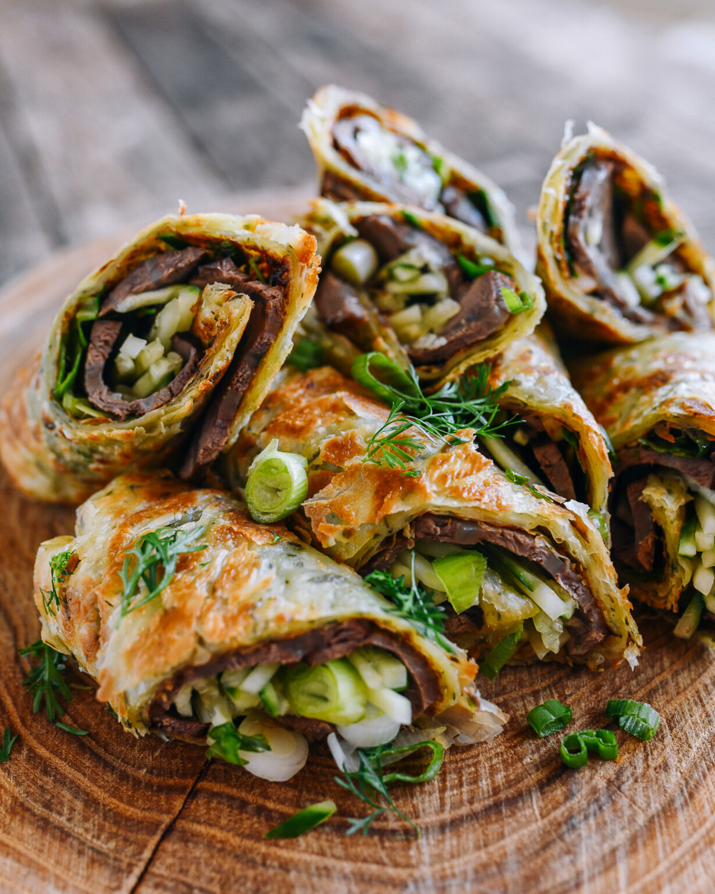

Beef Rolls

Description
Taiwanese beef rolls consist of thinly sliced, aromatic braised beef, wrapped with sweet hoisin sauce, fresh scallion, and cucumber in a crispy, flaky scallion pancake. If that description doesn’t have you immediately interested, I don’t know what will!
A Beloved Taiwanese Snack
We’ve covered several Taiwanese classics on The Woks of Life, including Beef Noodle Soup, Lu Rou Fan (Braised Pork with Egg Over Rice), Taiwanese Fried Chicken, Taiwanese Pork Chops, and Three Cup Chicken. You’ll see such dishes on most Taiwanese restaurant menus.
Another common item on said menu are these Taiwanese beef rolls, made with crispy green onion pancakes. It’s flaky, chewy, tender, sweet, refreshing, savory, and salty, all at the same time.
We ate at a local Taiwanese restaurant recently, and saw this delicious snack on the majority of the tables. We ordered it as well, and immediately wondered why we hadn’t covered a recipe here on the blog!
Ingredients
FOR THE BRAISED BEEF SHANK:
- 1 1/2 to 2 pounds boneless beef shank
- 2 slices ginger
- 4 cups water (plus more for pre-boiling the beef)
- 10 g rock sugar (or substitute granulated sugar; 10g rock sugar = about 2 teaspoons granulated)
- 1 small cassia cinnamon stick
- 1 dried bay leaf
- 1 star anise pod
- 1 small piece dried tangerine peel
- 3 whole cloves
- 1 teaspoon Sichuan peppercorns
- 1 teaspoon white or black peppercorns
- 3 cloves garlic (smashed)
- 2 scallions (cut into large pieces)
- 3 tablespoons Shaoxing wine
- 3 tablespoons light soy sauce
- 1 tablespoon dark soy sauce
FOR THE REST OF THE RECIPE:
- 6 scallion pancakes (store-bought, or make your own using one of our recipes)
- oil (any neutral oil)
- 1 medium cucumber (julienned)
- 3 scallions (chopped)
- 3 tablespoons cilantro (chopped)
- 2-3 tablespoons hoisin sauce
Steps
- Slice the beef shank into 4 to 5-inch pieces. Place in a medium pot along with the ginger slices, and cover with water. Bring to a boil, and boil for 30 seconds. Drain, rinse the beef, and clean the pot. Discard the ginger slices.
- Add the beef back to the clean pot, and add the rock sugar, cinnamon stick, bay leaf, star anise, dried tangerine peel, cloves, Sichuan peppercorns, white or black peppercorns, garlic, scallions, Shaoxing wine, light soy sauce, and dark soy sauce.
- Cover with 4 cups of water. If the beef isn’t covered, add a little more water. Bring to a boil, then reduce the heat to a simmer. Cover and simmer for 1 hour, or until fork tender but still firm (the beef shouldn’t be fall-apart tender). Remove the beef from the pot, and allow to cool at room temperature. Cover and chill in the refrigerator until cooled completely (at least 2 hours or overnight).
- Cook the scallion pancake in oil until crisp on both sides (follow package instructions). Meanwhile, thinly slice the beef and prepare your cucumber, scallions, and cilantro (if using).
- Spread some hoisin sauce on each pancake, and add the scallion, cilantro, and a layer of beef. Then add the cucumber. Roll the scallion pancake tightly, and slice the roll in half. Repeat with the remaining pancakes and serve!